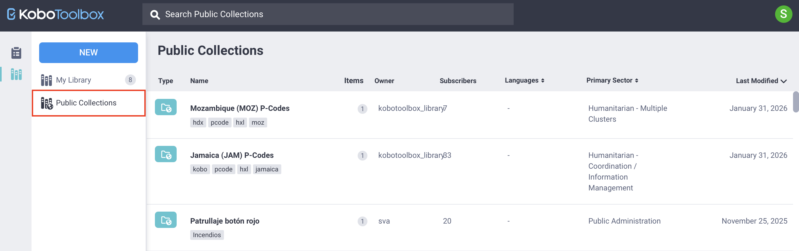
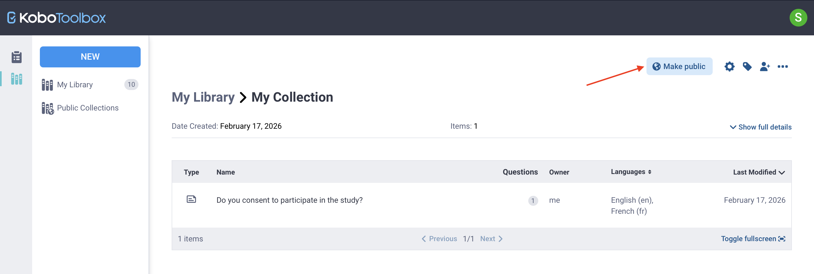
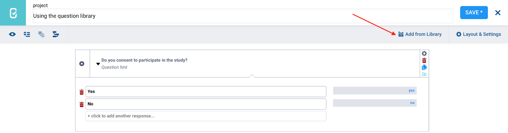
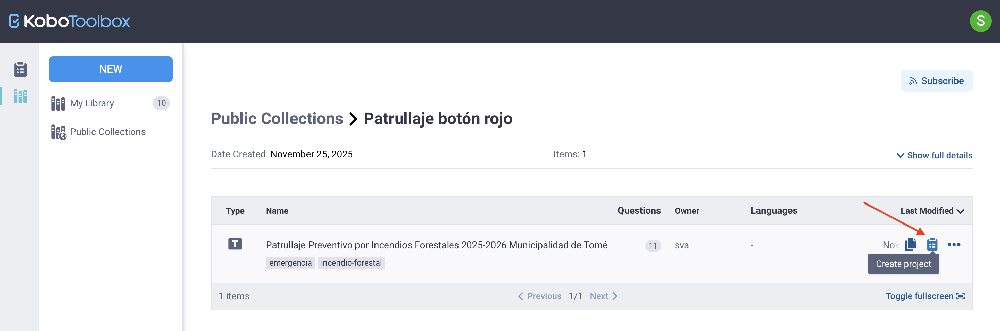

Busca en nuestra documentación, explora nuestros recursos y visita nuestro Foro de la Comunidad para obtener información más detallada
Última actualización: 20 Mar 2026
Las colecciones públicas permiten a los usuarios de KoboToolbox compartir y reutilizar preguntas de encuesta predefinidas, bloques de preguntas y plantillas completas. Cuando una colección se hace pública, queda disponible para todos los usuarios del mismo servidor de KoboToolbox. Las colecciones públicas pueden incluir preguntas o grupos de preguntas de uso frecuente, como características demográficas u otros indicadores estándar.
Al hacer público el contenido, los usuarios contribuyen a una biblioteca compartida que ayuda a estandarizar encuestas y promover medidas de uso generalizado en la comunidad de Kobo.
Este artículo explica cómo localizar, usar y crear colecciones públicas en la biblioteca KoboToolbox.
Para obtener más información sobre la biblioteca KoboToolbox, consulta Usar la biblioteca de preguntas de KoboToolbox.
Para acceder a las colecciones públicas desde tu cuenta de KoboToolbox:
Haz clic en el icono Biblioteca en el menú de la izquierda.
Abre la pestaña Colecciones públicas.

Verás una lista de todas las colecciones públicas disponibles en tu servidor, así como el propietario de la colección, el número de elementos, el número de suscriptores, los idiomas disponibles, el sector principal y la fecha de última modificación.
Nota: Las colecciones públicas en el Servidor Global y en el Servidor con sede en la Unión Europea pueden ser diferentes. Las colecciones agregadas a un servidor solo son accesibles desde ese mismo servidor.
Para encontrar una colección específica, puedes explorar la lista, ordenar o filtrar los resultados, o usar la barra de búsqueda para ingresar palabras clave.
Para crear una colección pública, primero debes crear una colección en tu biblioteca de preguntas. Desde la biblioteca de preguntas:
Haz clic en NUEVO y selecciona Colección.
Ingresa un nombre, una descripción breve, la organización, el sector principal y el país. Estos campos son obligatorios para hacer pública una colección.
Haz clic en Crear.
Agrega al menos un elemento de tu biblioteca a la colección.
Abre la colección y haz clic en Publicar.

Para obtener más información sobre cómo crear colecciones en tu biblioteca, consulta Usar la biblioteca de preguntas de KoboToolbox.
Para usar elementos de colecciones públicas en tus propios formularios o proyectos, puedes suscribirte a colecciones, recuperar elementos individuales o crear nuevos proyectos a partir de plantillas públicas.
Suscribirse a una colección pública la agrega a Mi biblioteca, lo que te permite acceder fácilmente a sus preguntas, bloques o plantillas y usarlos en tus propios formularios.
Para suscribirte a una colección pública:
Pasa el cursor sobre la colección y haz clic en SUSCRIBIRSE a la derecha, o
Abre la colección y haz clic en SUSCRIBIRSE en la vista de detalles.

Para eliminar una colección de tu biblioteca, haz clic en CANCELAR SUSCRIPCIÓN.
Si no quieres suscribirte a una colección pública completa y solo necesitas elementos específicos, puedes clonarlos o descargarlos individualmente. Para hacerlo:
Abre la colección que contiene el elemento que te interesa.
Pasa el cursor sobre el elemento.
Haz clic en Clonar para agregarlo a tu biblioteca, o selecciona Otras acciones para descargarlo como archivo XLS o XML.
Después de agregar preguntas de una colección pública a tu biblioteca, ya sea suscribiéndote a la colección o clonando elementos individuales, puedes reutilizarlas en futuros formularios desde el editor de formularios de KoboToolbox (Formbuilder).
Nota: Solo las preguntas que se han agregado a Mi biblioteca pueden insertarse en tus formularios usando el Formbuilder.
Para usar preguntas o bloques de preguntas de una colección pública en tu formulario:
Haz clic en Agregar desde la biblioteca en la esquina superior derecha.
Selecciona la pregunta o el bloque de preguntas que quieres agregar y arrástralo a la ubicación deseada en tu formulario.
Si tu biblioteca de preguntas contiene muchos elementos, puedes usar la función Buscar para localizar rápidamente la pregunta o el bloque que necesitas.

Nota: Cuando agregas una pregunta de tu biblioteca de preguntas a un formulario, los cambios que realices en el formulario no afectarán la versión original guardada en la biblioteca.
También puedes usar una plantilla de una colección pública para crear un nuevo proyecto de formulario, ya sea desde tu biblioteca de preguntas o desde la Página de proyectos.
Desde la biblioteca de preguntas
Puedes crear un proyecto a partir de una plantilla en Mi biblioteca si te has suscrito a la colección, o directamente desde Colecciones públicas:
Abre la colección pública.
Pasa el cursor sobre la plantilla.
Haz clic en Crear proyecto a la derecha.
Ingresa un nombre para el nuevo proyecto.

Nota: Puedes crear un proyecto a partir de una plantilla en una colección pública aunque no te hayas suscrito a la colección pública.
Desde la Página de proyectos
También puedes crear un proyecto a partir de una plantilla pública directamente desde la Página de proyectos, siempre que te hayas suscrito a la colección:
Haz clic en NUEVO y selecciona Usar una plantilla.
Elige una plantilla guardada y haz clic en Siguiente.
Ingresa los detalles del proyecto y haz clic en Crear proyecto.
En ambos casos, se creará un nuevo proyecto de KoboToolbox que puedes editar e implementar.
Nota: Editar un proyecto creado a partir de una plantilla no modifica la plantilla original.
Dentro de Colecciones públicas, la barra de búsqueda admite consultas simples y avanzadas. De forma predeterminada, si ingresas una palabra clave sin especificar un campo, el sistema busca en varios campos, incluidos el nombre, el nombre de usuario del propietario, la descripción, las etiquetas de las preguntas, las etiquetas y el UID. Las búsquedas no distinguen entre mayúsculas y minúsculas de forma predeterminada.

Si quieres acotar los resultados o buscar en campos específicos dentro de las colecciones públicas, puedes usar las opciones de búsqueda avanzada que se describen a continuación.
La búsqueda avanzada usa un formato estructurado: campo__subcampo__operador:valor.
El prefijo campo o campo__subcampo define el campo en el que buscas (por ejemplo, el nombre de la colección).
El sufijo operador define cómo se compara el valor.
Nota: Usa un doble guión bajo para separar cada elemento.
Algunos ejemplos de prefijos:
Prefijo |
Campo en el que se busca |
|---|---|
|
Nombre de la encuesta, colección, pregunta, bloque o plantilla |
|
Nombre de usuario del propietario del elemento |
|
Campo de descripción |
|
Etiquetas de preguntas e idiomas disponibles |
|
Etiquetas asignadas |
|
Identificador único (UID) del objeto |
|
Campo de configuración anidado, como el valor del país |
Algunos ejemplos de sufijos:
Sufijo |
Tipo de valor |
Descripción |
|---|---|---|
|
Texto |
Coincidencia exacta (distingue mayúsculas y minúsculas) |
|
Texto |
El campo contiene el valor (distingue mayúsculas y minúsculas) |
|
Texto |
El campo comienza con el valor (distingue mayúsculas y minúsculas) |
|
Texto |
Coincidencia exacta (no distingue mayúsculas y minúsculas) |
|
Texto |
Coincidencia por contenido (no distingue mayúsculas y minúsculas) |
|
Texto |
Coincidencia por inicio (no distingue mayúsculas y minúsculas) |
|
Numérico |
Número exacto |
|
Numérico |
Menor que |
|
Numérico |
Menor o igual que |
|
Numérico |
Mayor que |
|
Numérico |
Mayor o igual que |
Por ejemplo, owner__username__icontains:team busca colecciones públicas cuyo nombre de usuario del propietario contenga la palabra «team», independientemente de las mayúsculas y minúsculas.
Nota: Si no se agrega ningún sufijo, se usa exact de forma predeterminada. Agregar i antes de un operador de texto hace que no distinga entre mayúsculas y minúsculas.
Puedes combinar filtros usando AND, OR y NOT para obtener resultados más precisos.
Por ejemplo, owner__username__icontains:team AND tags__name__icontains:baseline busca en el campo de nombre de usuario del propietario y en el campo de etiquetas.
¿Encontraste lo que buscabas? ¿La información fue clara? ¿Faltaba algo?
¡Comparte tus comentarios para ayudarnos a mejorar este artículo!